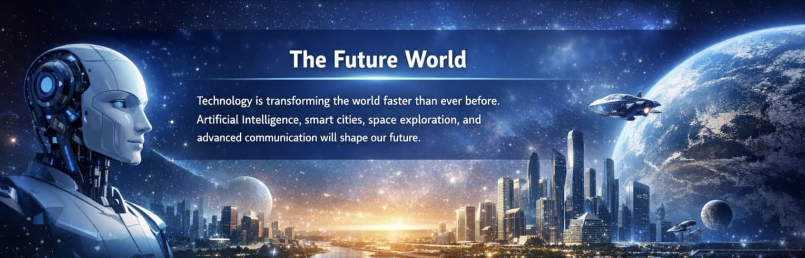

The 21st century is a time of rapid technological development. New technologies like Artificial Intelligence, smart cities, advanced transportation, and space exploration are changing the world.
In the future, humans may live in smarter homes, travel in self-driving cars, communicate instantly across the globe, and even live on other planets.
Artificial Intelligence (AI) is a branch of computer science that focuses on creating smart machines that can perform tasks that normally require human intelligence. These tasks include learning, problem-solving, decision making, speech recognition, and visual perception. In the 21st century, AI is becoming an important part of our daily lives. It helps improve technology, automate tasks, and make systems more efficient.